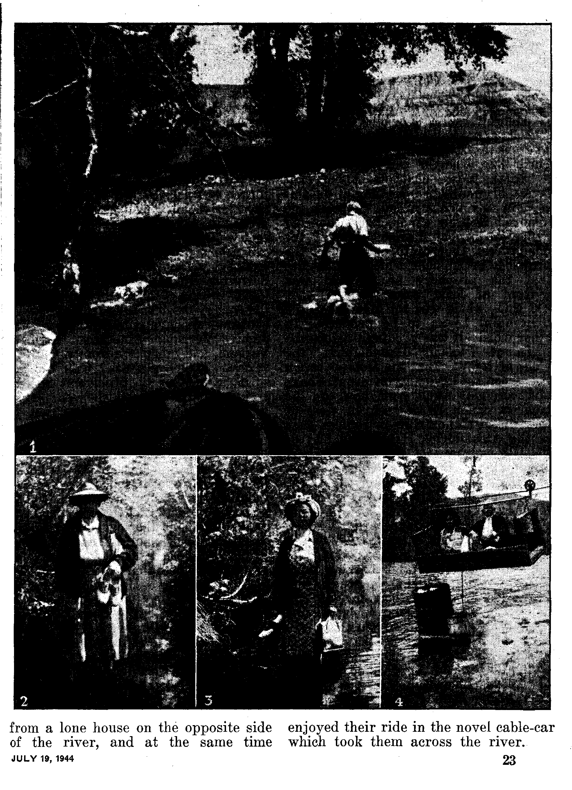

Is Seattle Losing Her Freedoms? Whom Was Hughes Protecting?
Misnomers
Positive Action in Freedom’s Behalf The Hierarchy Hates Freedom Hierarchy Engenders Religious Hate Hughes’ “Investigation” a Farce Who Engenders Racial Hate? Objector to the War Effort ‘Behold, a Beam in Thine Own Eye!’ Be on Guard, Americans!
The Spinners of Insect Traps
Twelve Seconds in the Air
No Appeal to American Vanity “Thy Word Is Truth”
This Creature Called “Man” ‘Wresting the Scriptures’—2 Peter 3:16 American Standard vs. Psalter of Mary Fabrizio Cardinal Ruffo Monasticism in Britain
3
4
5
6
7
8
9
10
11
12
13
13
15
16
17
19
19
21
22
Jehovah’s witnesses—Overcoming Obstacles 22
Presenting “This Gospel of the Kingdom”
Growth of the Canon of the Hebrew and
Published every other Wednesday by WATCHTOWER BIBLE AND TRACT SOCIETY, INC* 117 Adams St., Brooklyn 1, N. Y., U. S. A.
‘ OFFICERS
President N. H. Knorr
Secretary t W. E. Van Amburgh
Editor Clayton J. Woodworth
Five Cents a Copy $1 a year in the United states $1.25 to Canada and all other fcountrle?
NOTICE TO SUBSCRIBERS
Remittances: For your own safety, remit by postal or express money order. When coin or currency is lost in the ordinary mails, there is ho redress. Remittances from countries other than those named below may be made to the Brooklyn office, but only by International postal money order.
Receipt of a new or renewal subscription will' be acknowledged only when requested. Notice of Expiration is sent with the journal one month before subscription expires. Please renew promptly to avoid loss of copies. Send change of address direct to us rather than to the post office. Your request should reach us at least two weeks before the date of issue With which it is to take effect. Send your old as well as the new address. Copies will not be forwarded by the post office to your new address unless extra postage is provided by you.
Published also in Greek,. Portuguese, Spanish, and Ukrainian.
OFFICES FOR OTHER COUNTRIES
England 1 34 Craven Terrace, London, W. 2
Australia 7 Beresford Road, Strathfield, N. S. W. South Africa 623 Boston House, Cape Town
Mexico Calzada de Melchor Ocampo 71, Mexico, D. F. Brazil Caixa Postal 1319, Rio de Janeiro
Argentina Calle Honduras 5646-48, Buenos Aires Entered as second-class matter at Brooklyn, N* Y., under the Act of March 3, 1879.
■ ■h
Desmond or Peter, Which?
♦ Which will you believe, “Reverend Father” Francis X. Desmond, C.M., Seminary of Our Lady of Angels, Niagara University, Niagara Falls, N.Y., or the apostle Peter ?
The dead are dead, according to Peter, and stay dead until they are awakened. This was true even of Jesus. Peter said of Him (1 Peter 1: 21) that God “raised him up from the dead, and hath given him glory*’. (Douay Version) Moreover, the dead, according to Peter, are in the Bible hell (not the theological one). He quotes David and says that David was speaking for Christ when he said, prophetically in Psalm 15:10, “Thou wilt not leave my soul in hell” ( Acts 2: 27; Douay). Peter goes further. Speaking at the entrance to the temple a few days afterwards, he said to his fellow Jews, “But the author of life you killed, whom God hath raised from the dead, of which we are witnesses.”—Acts 3:15, Douay.
Desmond disagrees with all this. In an appeal for money (of which Peter said he had none [Acts 3:6, Douay], and in which he seemed to have no interest) the Niagara Falls priest says, “In torment they wait and hope.” The Niagara mist, or something else, has made “Reverend” Desmond all wet. Peter says that when the cities of the Sodomites and the Gomorrheans were reduced to ashes they thus became “an example to those that should after act wickedly” (2 Peter 2:6, Douay), and instead of landing in a place of bright flamed the thing that they actually get is “the mist of darkness” for ever. —2 Peter 2:17, Douay Version.
I Either Desmond and Peter should get together and agree or else one of them should quit. Desmond says of what he calls the “suffering souls” that “we alone, through the mercy of God, possess the power to help them”. But, being all wet, he can’t do a thing.
' CONSOLATION
“And in His name shall the nations hope.”—Matthew 12:21, A.R.V.
Volume XXV Brooklyn, N. ¥., Wednesday, July 19, 1944 Number 643
Is Seattle Losing Her Freedoms?
IF Christ Jesus were to come again to the earth as a man, what would be His reception by this twentieth century world? Multitudes would hear Him gladly. Many cities in the United States would open their auditoriums to the Son of God, despite hot opposition from certain quarters. Other cities would capitulate to pressure and close their auditorium doors to Him. Seattle would. Indignant citizens of that city may demand, Who- would stop Him from using our Civic Auditorium? The answer: Charles C. Hughes, superintendent of buildings.
But why? Because that great "faithful and true Witness” would say to modern religionists what He said to their prototypes 1900 years ago. Of them He might say: “All their works they do for to be seen-of men: they make broad their phylacteries, and enlarge the borders of their garments.” Then, changing to direct address, ‘Woe unto you, hypocrites I for ye devour widows’ houses, and for a pretence make long prayer: therefore ye shall receive the greater damnation. Woe unto you, hypocrites! for ye compass sea and land to make one proselyte, and when he is made, ye make him twofold more the child of hell than yourselves. Woe unto you, hypocrites! for ye are like unto whited sepulchres, which indeed appear beautiful outward, but are within full of dead men’s bones, and of all uneleanness. Even so ye also outwardly appear righteous unto men, but within ye are full of hypocrisy and iniquity. Ye serpents, ye generation of vipers, how can ye escape the damnation of hell? I send pnto you prophets, and wise men, and scribes: and some of them ye shall kill and crucify; and some of them shall ye scourge in your synagogues, and persecute them from city to city: that upon you may come all the righteous blood shed upon the earth, from the blood of righteous Abel.’—Matthew 23:5, 14, 15, 27, 28, 33-35.
Jesus Would Offend Shaughnessy
Those words, with modern application, would engender religious antagonism; so Hughes' would rule. The Messiah might even go so far as to declare, “Call none your father upon earth; for one is your father, who is in heaven.” (Matthew 23:9, Catholic Douay Version Bible) “Father” Gerald Shaughnessy, bishop of the Seattle diocese, could not tolerate that; it would be holding him up to contempt and ridicule. And Hughes could not stand that. Again, Jesus might repeat the words He said to religionists long ago: “Ye are of your father the ' devil, and the lusts of your father ye ’ will do. He was a murderer from the beginning, and abode not in the truth, because there is no truth in him. When he speaketh a lie, he speaketh of his own: for he is a liar, and the father of it. And because I tell you the truth, ye believe me not.” (John 8:44,45) That does it! Surely Jesus would have to by-pass Seattle’s Civic Auditorium. Charles C. Hughes would so rule. And the city council, by a vote of 7 to 2, would sustain him 1
Far-fetched speculation, you say? Not
JULY 19, 1944
at all. A text declaring a principle that bridges the nineteen centuries separating modern Seattle from Jehus’ earthly sojourn makes it, in effect, an actuality. It reads: “The King shall answer and say unto them, Verily I say unto you, Inasmuch as ye have done it Unto one of the least of these my brethren, ye have done it unto me.” Also, “Inasmuch as ye did it not to one of the least of these, ye did it not to me.” (Matthew 25:32-46) Christ Jesus found Jerusalem a city filled with religious hate. Walking in His footsteps, declaring the same message, Christ’s followers find Seattle to be a city of religious hate. Three times Seattle has proved it. Its hatred quickly rises to the surface for the same reason that Jerusalem’s did, namely (as quoted above), “because I tell you the truth.” One does not engender religious hatred in Seattle. It is already there, unrationed. Just speak the Bible truth and it will come out in all its Middle Ages ugliness. Nothing else will so quickly fan it into flaming fury.
Here are the facts. The Watchtower ■ ■ H ' ' ' '
Bible and Tract Society, Inc., publishers and legal corporation acting for Jehovah’s witnesses, selected Seattle as one of the cities in which to hold its annual convention, in 1944. Watchtower representatives called on Mayor Devin. A statement by him, which appeared in the Seattle Post-Intelligencer, May 5, 1944, made clear his democratic stand:
“It is my present intention to instruct the building superintendent to issue the lease, if application, is made,” the mayor said. “To refuse them use of the auditorium for a reli-' ■ .■ ■» •
gious meeting would violate the letter and spirit of our constitutional guarantees of speech and religion. These people, I feel, are entitled to the consideration that we would give groups representing any other religious group.”
Next Councilwoman Mrs. F. F. Powell was visited, who was very favorable. Application for the Civic Auditorium was made on May 5. The auditorium manager
referred it to Chas. C. Hughes, who promptly turned thumbs down. As grounds he cited an ordinance passed in 1938, which prohibits use of the auditorium “for any purpose by speech or otherwise which will tend to engender religious or racial antagonism”. (Mayor Devin stated to the Watchtower representative that he was very much opposed to that ordinance, and that if he had been mayor in 1938 he would have Vetoed it.) Appeal from Hughes’ decision was taken to the city council. Two members of the city council appreciated the freedom issues involved; they voted to overrule Hughes’ prejudiced ruling. Seven councilmen failed dismally in their duty as public servants in a democracy; they supported the building superintendent, proving themselves as arbitrary and capricious as he is. No, said they, Seattle citizens and others could not use the Civic Auditorium if they insisted on obeying Jesus’ command to preach God’s Word exposing religion.
Seattle is losing her freedoms.
Whom .Was Hughes Protecting?
However, the council meeting was extremely enlightening. It showed whom Hughes was protecting, namely, the Roman Catholic Hierarchy. Though posing as knight-errant for all religions in preventing any engendering of hate, his action was solely on behalf of the hate-breeding Catholic cult. That is the organization whose catechisms and other declarations condemn democratic principles as heresy, so they would have no scruples about urging political dupes to crush such freedoms. But there are other religious groups that, while disagreeing sharply with the Witnesses’ beliefs, are unwilling to sacrifice civil liberties to silence Jehovah’s people. All this the council meeting disclosed.
Of this meeting the Watchtower representative writes:
This was an open hearing. There were some 75 to 80 persons present. Several members of the Council of Churches, and some ministers, made some splendid talks in our behalf . Also, some unauthorized individuals did likewise.
I *■ I
Other private individuals, representatives of the Knights of Columbus, American Legion and auxiliary organizations made some very nasty talks against the Witnesses. Mrs. Powell made a wonderful plea. When it was put to a vote, however, it was turned down "in a hurry by a vote of 7 to 2.
Here is how the forces for and against freedom lined up: The freedom-haters under Bishop Shaughnessy, head of the Seattle diocese, were represented by F. J. Schaaf, grand knight of the Seattle Knights of Columbus. Dutifully at the heels of this foreign religious organization was the so-called “American” Legion. Tyre Hollander and George Flood, a national officer of the Legion, were its lead-off men. “Grand knight’ Schaaf is also a legionnaire. In recent years these two organizations have been inseparable in their fight against free worship, speech, and assembly. They make splendid twins. Both are devoted to Fascist methods. A former national commander of the Legion correctly said, “Do not forget that the Fascisti are to Italy what the American Legion is to the United States.” By speech and acts the Legion has advocated anarchy and mob violence to wipe out Jehovah’s witnesses, the ones they and their Hierarchy allies persecute. From behind the flag’s folds the state-worshiping legionnaires stab out at the freedom principles for which it stands. Like their religious cronies, their outward appearances and pretenses are good, and deceive many; hut inwardly they are devoted to the dark ideologies of totalitarianism. Americans? Not unless the term has degenerated from its high plane to a name for those enamored with totalitarian tactics and storm-trooper methods. / ■
The so-called “American” Legion’s vile record of the past few years calls for this caustic vein of comment. They have invariably stood shoulder to shoulder with the Hierarchy in fighting against freedoms characteristic of America. Have these high standards become too old-fashioned for a modern world wherein many nations streamline their rule by adopting a centralized, quickacting total state setup? Axis agents have boasted that even if defeated militarily their totalitarian ideologies will be absorbed by their opponents, and that hence their system will triumph in the end. The “American” Legion has about reached the saturation point. If any organization is more misnamed it is not known, unless it is the calling of the Vatican City crowd “Christian”; or possibly the calling of Seattle’s auditorium “civic”. It would be more in line with the facts to call it Hughes’ Auditorium, by the grace of a seven-man majority of the city council.
Americans! keep an eye on the un-American Legion and Catholic Action! You may cheer when those with whom you disagree lose their liberty today. Will you cheer when you lose yours tomorrow ? If you unwisely permit or encourage them in their sabotage of American principles, do not be surprised when you become their next victim. If they can do it to one, they can do it to others.
There were some individuals at the open hearing who thought the boys overseas would not like to read in their home-town papers that Civic Auditorium was being used by this Christian group, Jehovah’s witnesses. How will they like to read that some of the four freedoms for which they fight are only theoretical in Seattle? How will they enjoy hearing that the national family at home is divided, that some misguided, shortsighted ones stand for minority-oppressing measures on the home front?
Ranged against these chronic opposers of freedom, the Hierarchy and the Legion, was a goodly representation of-freedom-lovers. First, there were the representative of the Society and others of Jehovah’s witnesses present. The
many decisions of the courts, from the lower courts on up to the United States Supreme Court, testifying to the loyalty of the Witnesses and their rights of worship and assembly were cited. The fact that the FBI had declared them nonsubversive, law-abiding citizens was mentioned. to counter the hysterical tirades of legionnaires and other Hierarchy tools, all of which unpatriotic, rabble-rousing rantings are perpetrated in the name of patriotism.
Exemplary Americans
But here is the praiseworthy thing, the thing that indicates love of real Americanism still burns intensely in the bosoms of some. Let it be made known in th'e words of the report in the PostIntelligencer, of May 16,1944:
Church Group Aids Witnesses
Coming to the defense of Jehovah’s witnesses, the executive committee of the Seattle Council of Churches yesterday took a stand in favor of permitting the sect to use the Civic Auditorium for its five-day convention, August 9 to 13, inclusive. This was announced at the City Hall by Councilwoman Mrs. F. F. Powell, who said she was notified during yesterday’s city council session that the action had been taken at the church committee’s noonday meeting. The Rev. Harold V. Jensen is president of the group.
“I am entirely in accord with the executive committee’s action,” the Rev. Dr. Jensen said last night. “I believe we should exert ourselves to obtain for everyone the freedom of expression which we ourselves desire. Denial of the use of Civic Auditorium to Jehovah’s witnesses would be discriminating against them. The precedent could be used later against any group with whom we disagreed. It would contribute a real threat to democracy.”
The Council of Churches committee, Mrs. Powell was informed, had voted unanimously to support the sect’s petition “in the interests of freedom of speech, worship and assemblage” and to urge that they be given the same consideration as “any other religious group”.
The Council of Churches represents 189 churches of 17 Protestant denominations in Seattle. The action of the executive committee of 25 pastors and laymen was unanimous; in other words, they are at unity in standing for freedom. Jehovah’s, witnesses do not agree with “organized religion”, but they have ever held that all religious groups, Hierarchy included, should have full right to preach and teach their beliefs. That is the American way, the freedom way. Undoubtedly the Council of Churches takes strong exception to the teachings of Jehovah’s witnesses. But they do not permit this to distort their upright senses of freedom and Americanism into the twisted and deformed version held by some self-proclaimed super-patriotic groups, and the intolerant attitude adopted by the Hierarchy. When one favors freedom for those who disagree with him, then that one understands and practices the traditional American freedoms. It is extremely gratifying to see this display of fairness and justice on the part of the Council of Churches in Seattle. It is a demonstration of sterling Americanism that should shame the intolerant Hierarchy and cause the noisy Legion to blush. But they don’t know how.—Jeremiah 6:15;8:12.
Positive Action in Freedom’s Behalf
Nor did the Protestant organizations content themselves with just a statement. They came to the open hearing and fought for freedom. On the council meeting the Post-Intelligencer reported:
Vigorously defending the Witnesses’ petition were Atty. Arthur G. Barnett, representing the Seattle Council of Churches; the Rev. Mary McKee, pastor of the Fauntleroy Congregational Church; and the Rev. R. W. Pruitt, pastor of the Beacon Hill Congregational Church.
In a written summary of his remarks before the city council R. W. Pruitt said:
I have experienced the sting of tlieir [Jehovah’s witnesses] thrusts personally, to
CONSOLATION
-I
my discomfort and annoyance. If anyone has a right to be antagonistic to them, T feel that the right and occasion is mine as truly as it may be of anyone else. Yet, I have found in more recent and intimate knowledge of their purposes, that they seek to oppose autocratic aspects which we all ought to recognize as being abuses of the democratic principle, and all too common within our systems of religion. While I may not be in sympathy with some Of their methods or policies, or many of their doctrines, yet I do believe that consistency and fairpess is at stake in this matter, and that we ought not to make a restriction which might even stand a chance of being branded as interfering with the freedom of worship; and I do believe that American principle is here on trial.
In a similar written statement Arthur G. Barnett testified:
My remarks were substantially as follows: That the Executive Committee of the Seattle Council of Churches was representative of many Protestant denominations whose history indicated a great struggle to obtain their respective religious freedom; that many Protestant denominations were critical of the Watch Tower Society and, at times, felt that they (Protestant denominations) were being the object of criticism by the Watch Tower Society, but despite this fact we felt that the essence of religious freedom, freedom of speech and freedom of assembly was to grant such freedom to those with whom we disagreed; that Fritz Thyssen stated in a book written by him and which is on file in the Seattle Public Library, that as a German Catholic he was convinced that the failure of the religious leaders of Germany to protest early against the persecution of the Jews was the beginning of the decline of civic righteousness which led to the persecution of all religion and the destruction of civil rights in Germany; that the courts of this land were unanimous in finding that the representatives of the Watch Tower Society were law-abiding, frugal and hard-working citizens with good reputations and that their religious beliefs had been upheld by the highest courts in the land; that regardless of whether or not the use of the auditorium was granted the Seattle Council of Churches felt compelled to make its testimony before the city council.
Refuting the false stare-statement of Hughes that a breach of the peace might occur if the Witnesses were permitted to use the Civic Auditorium, Attorney Arthur G. Barnett said he was confident it would “not be a lawless gathering unless those groups opposed to them go down there [to the auditorium] to commit violence”. Mr. Hughes was worried that the Hierarchy’s peace might be breached. The Protestant groups were opposed to his action; the Hierarchy element backed him up. These developments at the meeting of the city council prove it was Gerald Shaughnessy and his cohorts that Charles C. Hughes was shielding, rather than religion generally.
Protestants founded this nation to escape, the oppression of the Roman Catholic Hierarchy. They gave the nation a good start in freedom. Seattle’s Protestant organizations apparently ap- < preciate this precious heritage. They are grounded in democracy. The Catholic Church is rooted in Papal Rome, a foreign power steeped in totalitarianism. Recently the Hierarchy demanded that Protestant missionaries stay out of South America. She declared Protestants to be a minority there, that the population was largely Roman Catholic, and must not be exposed to the teachings of Protestantism. She would not like that principle applied to her in this country, where she is a minority and depends upon and claims the constitutional liberties provided for minorities. Yet she wants another minority group, the Witnesses, suppressed. As “Father” Harney, Catholic priest, said not many years ago, the Catholic Church would prevent, by death if necessary, the spread of heresy (Protestantism) wherever she was strong enough to do so. She tempers her conduct according to her strength.
Hierarchy Engenders Religious Hate
This Hierarchy proclamation concerning Sputh America, not unlike a greedy gangster warning others to stay out of his territory, is likely to engender religious antagonism. Charles C. Hughes doubtless approves, in this case. But it betrays the Hierarchy’s hatred of free worship, where she does not have to depend on that principle and is strong enough to quash it. It is in harmony with the pope’s speech of June 2, 1944, wherein he decried the “vast division and dispersal of religious confessions, that in the course of time have detached themselves from ‘Mother Church’”. He is now trying to prevent any “dispersal” of Protestantism to South America, and as his church becomes strong enough she hopes to gobble up all other “religious confessions”. Is it not possible that the Protestant organizations are awaking to these Hierarchy aims, that they are beginning to see the claws beneath her pious exterior?
Many individuals not affiliated with any organization were at the open hearing and spoke in favor of civil liberties. One private citizen expressed himself to the Post-Intelligencer, as follows:
i ' ' ■
Hats off to Mayor Devin and -Councilwoman Powell for speaking up for American democracy. There .are other kinds of “democracy” these days, where those who say “me too” can have all the freedom they want, but where those who are dissenters fare rather badly. The mayor and Mrs. Powell say with Jefferson, let these people, in this case Jehovah’s witnesses, have their say. But David Levine says, “No; these religious fanatics must not have the Civic Auditorium; we don’t want the disorders of 1938.” As a matter of fact there were no disorders when the city canceled [in 1943], without notice, the right of the Witnesses to continue their meeting. They left the auditorium in a quiet and dignified way. The only “disorder” was that caused by wordy politicians.
But the majority of Seattle’s city council east its vote to appease the Hierarchy and the notorious Legion, at the expense of cherished freedoms. They are councilmen J. Scavotto, D. Levine, J. Carroll, R. Jones, F. Laube, M. Mitchell, and W. Norton. They may take their bows before Charles Hughes and these two groups, and reap the votes with which the Hierarchy’s political machine chooses to reimburse them. Standing solidly behind the nation in its war aim of “four freedoms” are Councilwoman Mrs. F. F. Powell and Councilman Frank McCaffrey. These two, along with Mayor Devin and the Protestant organizations, will be gratefully remembered by Seattle freedom-lovers.
From the foregoing it is clear that Seattle is not one hundred percent a city of religious hate, far from it; but an evil element has given the city its unsavory reputation. To peer behind the scene in Seattle and see who is working the strings that move the responsible political puppets it is necessary to note the origin of the infamous hate ordinance of 1938. It sprouted after a convention of Jehovah’s witnesses held in the Civic Auditorium, in June, 1938. Judge Rutherford, a former Watchtower president, spoke on “Violence”. Mobsters, goaded on by Catholic priests on the scene, violently opposed that assembly and assaulted some of the conventioners. They invaded the building and tried to disrupt the meetings by forcing Catholic literature upon those assembled. Harking back to this occasion Shaughnessy’s paper, The Catholic Northwest Progress, May 19, 1944, displayed typical Hierarchy gall by saying the “disorders were caused by the Witnesses”. Only morons will believe people try to break up their own meetings.
Priest-incited hoodlums will invade
Fred W. Shorter, Seattle. the meetings of Jehovah’s witnesses.
- CONSOLATION
Jehovah’s servants never invade and disturb Catholic assemblies. Yet in those meetings plenty is said to engender hatred against the Witnesses, and that “plenty” is lies. Unable to refute the Bible message the Witnesses declare, religion vents its spleen by stirring base persons to commit acts of violence against them, as was done in the apostles’ day, and in Seattle in June of 1938. —Acts 17: 5.
Many of Seattle’s citizens are Catholic^, (not in favor of such tactics, however) and the scheming priesthood uses their votes to control the city’s politics. Hence, following Judge Rutherford’s expose of the totalitarian political ambitions of the Roman Catholic Hierarchy to dominate the world by cruel dictators her loyal political tools ‘framed mischief by law’ (Psalm 94:20), the hate law concerning ‘engendering religious antagonism’. The Hierarchy refuses to meet the charges of Jehovah’s witnesses by refuting them. She takes the “out” that it is beneath her dignity to answer. But it is not beneath her dignity to stir her dupes to mob action, or to underhandedly strike through corrupt politicians. Nor is it beneath her dignity or Jesuitic “moral” code to coerce and boycott. Gerald Shaughnessy boasted that he wrote 1,000 letters to clergymen and others, seeking their aid to keep Judge Rutherford from being heard in Seattle. The conspiracy failed. But his boycott against radio station KOL for broadcasting Judge Rutherford’s speech succeeded, and KOL was obliged to make a public apology for allowing free speech over its facilities. So, in 1944, in the approved Hierarchy style, Charles C. Hughes used the hate ordinance of 1938 to strike down free speech, worship, and assembly. ■
4
Hughes’ “Investigation” a Farce
At the time the application for use of the auditorium went to Mr. Hughes the Seattle Times, May 5, 1944, reported :
Building superintendent Charles C. Hughes today promised “a fair, thorough and unbiased” investigation of a request by Jehovah’s. witnesses for use of the Civic Auditorium for a convention in mid-August.
His “investigation” was not fair, not thorough, and not unbiased. In his letter instructing the auditorium manager to reject the application he quoted from some of the Society’s publications. The statements were conclusions that had been reached only after long, careful Scriptural arguments. Torn from their context and from the Scripturally correct setting, they might appear unfounded standing alone. For example, he quoted from the book Enemies: “From the evidence the conclusion is irresistible that the Roman Catholic Hierarchy organization serves the Devil and is therefore the enemy of God, the enemy of man, and the very personification of unrighteousness.” That appears harsh indeed. But no more so than Jesus’ words at John 8: 44, where He told the religionists that they were of their father the Devil because they did his works. Many of the Hierarchy’s devilish works, from the Inquisition up to modern times, had been cited by the book Enemies. Notice the quotation starts out, “From the evidence the conclusion is,” etc. This is typical of Hughes’ isolating conclusions and ignoring the factual evidence inspiring them. His “investigation” was not fair.
Charles C. Hughes’ “investigation” did not consider any publication issued by the Society since 1938. Five new books and many booklets have been released since then. Apparently these were not examined. His “investigation” was certainly not thorough. This failure to consider late publications, the ones conscientious examiners would go to first, betrays something else: he was proceeding on the same old prejudiced opinion formed several years previous; perhaps not by him, but by the Hier-
archy and their dupes, which is worse. His “investigation” was not a new, unbiased one.
Since the engendering of religious and racial hate is the issue Hughes raises, a few observations and questions on the subject are in order. First, to dispense with the matter of race hatred: Acts 17: 26 states that God “hath made of one blood all nations of men for to dwell on all the face of the earth”. The same principle appears where it is written, “There is no difference between the Jew and the Greek.” (Romans 10:12; Galatians 3: 28) Revelation 7: 9 shows members of all nations assembling unto the Lamb of God, Christ Jesus. Jehovah’s witnesses have never attacked any race.
But the Hierarchy! Papal bulls have repeatedly lashed out at the Jews, find engendered hatred toward them. The Devil-sponsored Inquisition singled out them, along with honest Catholic and Protestant Bible scholars who translated the Scriptures into the people’s language, as its chief target. She has not changed. When her concordat, partner, Catholic Hitler (never excommunicated despite many pleas), was overrunning countries his first act was to proscribe the work of Jehovah’s witnesses and revive the Papal anti-Semitic laws. “Father” Coughlin spearheaded the campaign in this country. It did not succeed; so the Hierarchy slid out from under his odious race-hatred movement by saying it was Coughlin’s baby, that she could not stop him. The totalitarian Hierarchy has absolute control over her priests, and could have made him bow to the Papal will as quickly as she recently did “Father” Orlemanski, the priest who went to Russia to confer with Stalin. Actually, Coughlin was acting under instructions from Papal Rome, serving as a “feeler”. The past and present record of the Roman Church convicts her of engendering racial antagonism.
As to the issue of religious hatred, these questions are raised: Should truths that affect the eternal welfare of mankind be hid if they expose falsifiers? Should such religious falsifiers be protected by stamping out free speech concerning the Bible message, if that inspired message makes religion’s works contemptuous and hateful in the eyes of honest folk? Should the words of desecraters go unrefuted and uncountered to maintain a “peace at any price” ? Should they be permitted to continue ^unanswered their blasphemies of God’s name so that their hypocritical “good name” may stand highly esteemed? (Luke 16:15) Extending the principle of the unconstitutional hate ordinance, Did Jesus deserve the death religionists inflicted upon Him because He exposed their hateful and contemptuous practices, practices that were leading themselves and unwary followers into destruction? To all the foregoing queries a “fair and unbiased” mind would indignantly answer No! Hughes and seven Seattle councilmen would say Yes.
With them political advantages come first. Charles “Censor” Hughes has “thrown his hat in the ring” for a county office. He is not a servant of the public. The Civic Auditorium is not paying its way; he will not allow it to earn legitimate revenue. He is the Hierarchy’s servant. (Romans 6:16) In 1943 he broke the Witnesses’ contract with the city for use of the auditorium after the first day, in obedience to the Hierarchy will. If a contract had been concluded this time, this old hand at contractbreaking would doubtless have returned to the scene of his “crime” and repeated it, for the Hierarchy. He gains his reward. As a candidate for county commissioner he will in all probability receive the support of Shaughnessy’s political clique.
Now, pause and reflect: The pope blessed Mussolini in Abyssinia, Hitler in Austria and Czechoslovakia (where a
priest, Tiso, was put in as ruler), and the Hitler-and-Mussolini-backed Franco in Spain. Archbishop Spellman recently added another coat of religious whitewash to the bloody butcher of Spanish democracy. The Vatican lauds Hitler’s puppet Petain as the “good marshal”, under whose reign Papal anti-Semitic laws were revived in France. The Vatican has diplomatic relations with the totalitarian powers, and has recognized the Japanese-sponsored government of the Philippines. His claimed neutrality is a joke. But Charles C. Hughes would say, “Don’t remember these things, Seattle citizens. Stick your heads in the sand and be a city of ostriches. If there’s any need for a fair, thorough and unbiased investigation I’ll make it. And I’ll not stir up any religious antagonism, except against unpopular minorities like Jehovah’s witnesses.” And seven of that city’s, councilmen, led around by the nose by the blatant “American” Legion and Knights of Columbus, would echo his words. '
It is not engendering religious hate to remember these facts. It is treasonable to democratic principles to ignore them. Facing facts is realistic. Consider this one: Hughes branded Jehovah’s witnesses as “people who lend nothing to the war effort except objections”. That is a base lie. It was deliberately made and calculated to engender hatred of this minority. Not one word of objection has been voiced in any Watchtower publication as to the war, its conduct, or any phase of military or home-front activity vital to the war. They preach the gospel of God’s kingdom, and, leave world affairs to those versed in them. (James 4:4) They have rendered aid. The Watchtower has done more to warn the people of the insidious work of the totalitarian dictators and their backers than has any other group, and this for years prior to the outbreak of global wTar. They have given valuable service in the fight for liberty on the home front by securing many court deci
JULY 19, 1944
sions that safeguard the democratic liberties under assault at home as well as abroad. Hughes’ slanderous words violate his own pet ordinance.
Objector to the Bar Effort
But what about the “Church” Mr. Hughes is so zealous to protect? Frequently and repeatedly, since the turn of the war in favor of the Allies, the pope has pleaded for a generous peace, yes, even a negotiated peace. This is contrary to Allied aims. The pope’s latest effort to salvage something from Catholic Hitler’s aggressions by a negotiated peace came on June 2, 1944, as the conquering Allied armies ■were closing in on Rome. Never protesting the long occupation of the “Eternal City” by the Nazis, he became suddenly nervous about the defilement of Rome as the United Nations forces approached. He decried the resolve of full victory, and accused those advocating it as responsible for a prolonged war. He strenuously objects to the “unconditional surrender” aim of the Allied war effort. Hence the most recent facts point to the pope and his Hierarchy as the ones ‘lending objections’ to the war effort, and not Jehovah’s witnesses. .
The New York World-Telegram (June .3, 1944), speaking editorially, had this to say regarding this papal speech: '
We think most Americans will be grieved by his effort to stop the war short of that full victory to which the Allied governments and peoples are committed, as the price of peace and freedom. . . . It is true that the Allies are continuing this war because only full military victory can achieve a just peace. The alternative is a negotiated peace, which Hitler has been fighting for since he lost the chance of military victory. , . . The pope in his appeal for the safety of Rome says, “We do not hesitate to repeat once more with equal impartiality and dutiful firmness that whoever would dare lift a hand against Rome would be guilty of matricide before the present
11
world and. in front of the eternal judgment of God.” It is a strange “impartiality” that fails to differentiate between the Axis defiler of religion, using Rome as a military base, and the Allied armies of liberation.
Mr. Hughes, is not such truthful comment as that likely to engender religious hate, on the part both of the Hierarchy against the above truth-teller, and of those fighting for democracy; are not the latter likely to be roused to antagonism against the pope and others urging appeasement and a negotiated peace? Yet the comment is' proper.
The New York Herald Tribune, June 3, 1944, in its editorial columns, said:
Pope Pius XII ... has always expressed himself with a circumspection through which it is not easy to grasp the exact bearing of what he says [Papal “double talk”, to be interpreted to suit the need in each country]. . . . But if he was also speaking for a negotiated peace with the Nazi evil, and it is inevitable that his carefully guarded words, produced at just this critical juncture in the development of the battle, should be so interpreted by many, then the address could only be regarded as an un-neutral intervention in favor of the Hitler conspiracy in the moment of its greatest peril. . . . The Allies have ’ insisted upon “unconditional surrender”. When the pope appears to attack that policy he unavoidably appears to be undermining as well the whole basis of the gigantic sacrifices which the Allied peoples are making in behalf of a better world.
Here, again, are words that might engender religious hate. But a fair and unbiased mind will not question the propriety of saying them. Since this Papal bid for junking the “unconditional surrender” principle, and negotiating with the demon-crazed Catholic dictator of Germany, the Allies launched the long-anticipated second-front invasion from the west. At that momentous time General Eisenhower (incidentally, his mother is one of Jehovah’s witnesses)
declared it must end in full victory. That opposes the pope. Might not the general’s words engender the religious hate of the Hierarchy, Mr. Hughes? He could not talk for “unconditional surrender” in your auditorium now, not after what the pope said, could he? Yes, perhaps he could; you do not apply your impossible ordinance without discrimination. You know its precarious, unconstitutional terms could not stand against any except an unpopular minority.
'Behold, a Beam in Thine Own Eye!*
In conclusion, be it noted that the Witnesses have used many civic and municipal auditoriums in other cities in times past, without incident. Seattle is not so holy that it could not stand a visit from the humble witnesses of Jehovah God. She is not so sinless that she could not profit by a few Bible assemblies. She is a city notorious for her vice, gambling, prostitution, etc. Only last year conditions became so flagrant that the federal government conducted investigations and army authorities threatened to place parts of the city under military supervision if the city did not take effective action to eliminate brothels. If the city council majority that blocked constitutional rights for Jehovah’s witnesses were as zealous in fighting against vice as they are in catering to “Bishop” Shaughnessy and the Legion and trampling underfoot the “four freedoms”, Seattle would be more American and less Hierarchical in its make-up. It would be more conducive to the welfare of troops stationed in its vicinity. It would be more patriotic. The FBI investigated Jehovah’s witnesses and found them to be loyal citizens. The federal government investigated Seattle and found her wanting. Yet she throws stones at Jehovah’s witnesses !
On June 5, 1944, Harold L. Ickes, secretary of the interior, said:
“What good does it to send armies to Rome, Berlin and Tokyo to liberate’, as we say,
the inhabitants of those countries, while denying people of those same extractions the liberation they have sought in this country?” he demanded. “How can we ever make the people of those lands, or of our own, believe in our sincerity if they behold Americans here refusing to other Americans the equality of treatment which is a fundamental right under the laws of God and the statutes of our forefathers? I say that we cannot.” [New York ' Times, June 6, 1944]
On that same dinner occasion another speaker, Dr. Aydelotte, asserted that “the final test of any civilization is the treatment of minorities”. Three times in recent years (1938, 1943, and now in 1944) Seattle has failed this test of civilization. The responsible ones, the ones instrumental in her losing freedoms, have been identified. The fault does not I
lie with the people generally, though they should soon open their eyes and take steps to remove the smirch on the city.
c - J,
It is certainly not the fault of some, such as the mayor, Mrs. F. F. Powell, Mr. Frank McCaffrey, those of the many Protestant organizations, and certainly not Jehovah’s witnesses. All these and others too are fighting for liberty on the Seattle home front. The fight will be hard; the come-back trail is not easy. Can she, will she, do it? The fly in the freedom ointment is the Hierarchy and its Legion toadies, along with aspiring politicians, such as the ex-superintendent of buildings (Chas. C. Hughes has been replaced by a new appointee of Mayor Devin) and a majority of the city’s councilmen. They cause a spoil-some stench over the entire city. (Ecclesiastes 10:1; 1 Corinthians 5:6) It is up to the citizens of Seattle whether the stench remains. Remember the words
____ _ -
of Wendell Phillips, American freedomlover: “Eternal vigilance is the price of liberty.” Seattle citizens, and all Americans, the warning is again sounded: Watch the so-called “American” Legion and Catholic Action!
1 I
HE spinners of insect traps; that’s the spiders; that’s what the word ‘ means. A spider is a spinder, spinner, spinster, or spinning one, and on a dewy ' morning in the early autumn, when the j sun is just right, you will find millions [ of them, spread all over the whole land-i scape; that is, you will find their shimmering webs in every tree and bush, I beneath stones, logs and rubbish, in [ hollow trees, postholes, and everywhere i else. They are to be found in Greenland !• and they swarm in the tropics.
; Silk from spider webs is worth 10c per | foot, and is used in many precision in-I struments, such as camera view-finders, theodolites, surveyors’ instruments, and for military purposes. After one of these i commercially useful citizens has parted 1 JULY 19, 1944
with 100 feet of silk, which it may do in the space of an hour, it is very hungry and must be fed. The best silk comes from the weavers of the flat webs of wheel-like design. It would take 10,000 of the threads, laid side by side, to make an inch. Great care is necessary to prevent the threads from overlapping. Gloves and stockings have been made of spider silk. Such silk is stronger than steel wire of the same size.
A writer accuses the spiders of having practically no intelligence, in spite of their ingenuity shown in the construction of the various forms of webs in which they specialize. One variety accepted a pith ball instead of her egg cocoon; another industriously enwrapped a piece of paper agitated with a needle
13
point. And yet this same writer stated that, because of their work in ridding the earth of destructive insects,
It is doubtful if civilized man could successfully cultivate or even inhabit the earth, if it were not for these despised benefactors, unless nature were to provide some other agency to hold even the balance of helpful and harmful life.
There is a great variety of spiders. One kind carries its young around until they are able to fend for themselves. She may have as many as a hundred on her back at one time. Another kind lives in the water. It builds a little silken diving bell under the water, and fills it with air carried down as bubbles between the abdomen and back legs, Its food consists of aquatic insects. It even mates and produces its young in its nest under the water.
It is a risky business for any young man to make love to a young woman, but it is especially so in the case of a spider. In certain varieties the male is so much smaller than the female that unless he has the proper advance (and maybe even then) his juieeless skeleton will be hung near the female’s hangout, along with those that preceded or followed him, like so many scalps on a savage’s wigwam. Feminine sympathy, feminine compassion! Humph! In one variety, the male approaches his mate with a fly wrapped in silk, which she seizes and retains during mating. Seems like a reflection on ’em both.
The spider has two jaws attached to his face, each having a hollow poison fang folded up within a groove when at rest, like a pocket-knife’s blade within its handle, and it seems there is truth in the claim that the bite of some species is specially poisonous to man. Sliders have eight legs, each of which is seven-jointed and ends in a foot having two or three claws, constructed for grasping and handling delicate threads.
Wildwood, in the Vancouver Daily Province, writing on “Flying Spiders”, says: p-
The haze in the bright sky of autumn is not all smoke; it has the lustre of pale reflective silver. Myriad shreds of fine-spun silk are floating through the air, waving strands of minute spider webbing, so light that they rise on the faintest breeze, and so strong that they trail the tiny passengers that spun them. • Winds lift them and carry them over mountains. Aviators have caught them thousands of feet high in the air. The flight is one of the greatest ventures in nature. The ground is always too crowded for them. While still little more than a pin-head size, they run to climb the nearest things that point upward, grass, flower stems, twigs, posts or walls. When the utmost height is reached, the infant * spinner pays out a line of silk, inch after inch ‘of gossamer until the pull of its “kite” is strong enough to lift the creature into the air; then away it rides, perhaps to the next tree, it may be to a piratic beak, or out over miles of land or water, to desert or sea, to be brought down finally perhaps on a drop of rain. Thus are peaks and treetops reached, for everywhere are spiders.
For the autumn days are full of spiders. Black “wolf-spiders” race over every inch of grass and garden constantly. Garden spiders busily tie up every stem and branch; every gate and fence. Indoor spiders knit every cranny and shelf, weave little dust-gathering curtains behind every book; barns and sheds are veiled from roof to floor, fields are webbed with threaded jewel-dust in the dew of every morning. Not hundreds, but millions, forage in every field. The earth is not wide enough, they take to the water, one kind waits on the incoming tide, and as the foremost wavelet retreats, runs down to meet the next, gathers a globule of air under its legs, lets the water run over it, then snatches food from the crest of the wave as it is thrown farther up the sand! It has been estimated, and with great care, that spiders destroy many more insects than do birds, but birds are loved, spiders are not.
Orville Wright, still living, 73 years , of age, navigated a box kite through the air at Kitty Hawk, N. C., when he was 33 years of age, and modern aviation began right there. Today, so the military men say, working plans are in process of completion that will .enable bombers to fly three thousand miles, drop a load of bombs that will have, virtually, the effect of an earthquake on the locality where they fall, and then they will be able to return to their bases. No city is safe, anywhere.
A few months before his death in an airplane accident in the southwestern Pacific, that able and kindly columnist Raymond Clapper said:
Air war is terrifying and brutal. That is one of the best things about it. At last we have the means of making cities uninhabitable, spreading a blight over ports, industrial areas, airfields, and—yes, why not be frank about it?—population areas. I have seen many blocks rendered uninhabitable around port areas in Africa and Sicily. At last war is being made so horrible for the civilian population that perhaps its ultimate stupidity will become clear.
What a strange thing it seems that today much of the fighting is being done at five to seven miles above the earth, and sometimes where the earth itself cannot even be seen by those who are in mortal combat with their' fellows. Under such circumstances even the engines must have help in Order to be able to breathe properly. This is really true. Two different methods of condensing the air are employed: in the one case the condensers are worked by the plane’s own engines; in the other, by special engines; and in extreme cases, by both.
It is no reflection on the rest of the world that the development of the automobile whipped up the development of the plane, and that it was in American factories that the engines of both were made by the million. When automobile manufacture ceased and airplane manufacture took its place Mussolini’s name became Mud, Hitler’s name became Hinky-Dink, and Hito’s name became Hit-and-Miss.
Major Al Williams, Scripps-Howard aviation writer, tries to tell the truth about this, without giving offense, when he puts it this way in the World-Telegram:
It is well for Americans to recognize that without the almost miraculous production accomplished by the American aircraft and other industries none of our allies still would be operating against the Axis. Of course, the Russians have put up a great fight. All credit is due them, as due the English, but neither nation could equal the airpower production of the Nazis. I make this statement not to stir up rivalry among those nations who share the common objective of beating Hitler but because the American people should understand that it is with Ameriean-built equipment and planes that the Russians and the British are fighting the war. When England was within a few hours of being swamped by Nazi airpower it was our American guns, ammunition, planes and ships that enabled her to brace and catch her breath for a new start.
There’s no question that the Russians were in the same fix when the Germans had destroyed Soviet munition factories and mine production prior to the Stalingrad episode. At that time it was American guns, planer and ammunition that gave the Russian soldier and airman the means to turn back the invader. Today American warplanes of all types, in great numbers on all the war fronts, are in the hands of American, British, French and Russian pilots. There is no aircraft-production machine in the world that can perform within wishing distance of our records. America is the airpower nation of the world today, and any system that makes such a position possible must be pretty sound.
The foregoing is not intended as an appeal to American vanity. The whole world is in on this thing. It is only a little while since a British airjnan, Captain Richard Allen, clipped 21 minutes off the best time of. the 3,100 miles from Montreal to Britain. He made it in 11 hours 35 minutes in “a B 24 Liberator on the R.A.F. Transport Command North Atlantic shuttle ferry for British Overseas Airways Corporation”. This is a bit from the London News Chronicle and refers to an American-built lend-lease plane in the hands of an expert British aviator. Its speed was 275 miles an hour.
The point is that the planes are going places in these days; and that isn’t guesswork. It is a fact. The war department has announced that the 11,748 miles from New York to Karachi, India, is a flight of thirty-seven hours thirty-five minutes. The trip has been made often enough that a time-distance schedule has been made. To be sure, it takes time to load and unload a plane, and the usual running time for the round trip mounts to twelve days, but think what it means to cart freight from Patterson Field, Ohio, to Karachi, India, and to be back in Ohio ready for another trip in two days less than two weeks. It seems almost impossible, but it isn’t; it’s the truth.
Other time-distance schedules have been advertised or otherwise mentioned, such as Chicago to Singapore in fortyseven hours; Washington to Yakutsk, Siberia, in twenty-eight hours; Kansas City to Chungking, China, in thirtyseven hours; New York to Calcutta, India, in forty-one hours; Chicago to Fairbanks, Alaska, in thirteen hours; Boston to Sao Paulo, Brazil, in twenty-three hours; Denver to Fiji in thirty-four hours; and San Francisco to Brisbane, Australia, in thirty-five hours.
Turn your eyes away from the war for a few minutes and think of what these changes in transportation mean to humanity as in terms of peace. The Los Angeles Examiner states that tens of millions of pounds of dehydrated foods are now being sent all over, everywhere. Why, in terms of peace, in a warless world, that would mean the absolute end of any such thing as starvation. The Examiner says that among the special foods that are going to Russia in this form are Russian borscht (beet juice) made the way the Russians like it, and Russian tachonka (pork) made according to the Russian recipes.
As for Italy, while volcanic dust is really good for vegetation, and quickly turns into green grass, yet it isn’t so good to breathe, either for humans or for airplane motors; and so Uncle Sam’s boys are now sowing grass seed (fifty tons of it) over southern Italy. And, though that is a small item, doesn’t it suggest some of the wonderful things that may yet be done by these vehicles that in some places crowd the skies?
The planes are bringing the ends of the earth together, and doing it with a jerk; and the aviators have to use their heads at both ends of the lifie as well as in between. Thus, to avoid carrying disease germs from one end of the planet to the other, it is necessary that fumigation or other sanitary measures be taken for the passengers and freight at every terminal. If there are tropical and communicable diseases in places on the other side of' the globe, who wants them brought to America merely because an aviator can get here in less than two days ?
Some aviators think that the invention of the Britisher, Captain Frank Whittle (age 36 at present, but working on this one invention since he was 22), may show as startling results as that of Orville Wright’s twelve seconds in the air. Mr. Whittle’s invention seems to have solved jet propulsion. It uses kerosene as fuel and does away with propellers. Hundreds of test flights seem to suggest that this is the next thing ahead.
Hi
VERY sane man knows, from knowledge of himself and from observation, that he and all other men are imperfect. Not only that, but every one must know that he is sinful. The righteously disposed man asks: How can I be relieved of these imperfections? Comes the answer from God: “Come now, and let us reason together, saith the Lord [Jehovah]: though your sins be as scarlet, they shall be as white as snow; though they be red like crimson, they shall be as wool.”—Isaiah 1:18.
The fact that God has asked man to reason with Him shows that God will not arbitrarily deliver man and give to him blessings without man’s consent. If the destiny of each man were fixed, without regard to whether he accepted or rejected the provision made for humankind, then there would be no occasion for men to reason with the Lord. This for ever puts to silence the theory of religionists that every human creature is predestinated at or before birth.
Furthermore, the fact that God invites man to reason upon the question of salvation is conclusive proof that God’s provision for human salvation is reasonable, not a foolish one, as some would make it appear. God’s adversary has deceived many religionists into saying: ‘No matter what a man believes, just so long as he is honest in his belief, that is sufficient. The belief of one is as good as that of another.’ One religionist Says: ‘My parents were good Catholics, and their religion is good enough for me.’ Another says: ‘My mother was a Methodist, and her religion is good enough
"T’ for me.’ The parents of both the Catho-lie and the Methodist may have been alike honest; but it is absolutely certain that not both could have been right,
because their theories of salvation are' very different. How, then, should we determine what to do? Jehovah answers: ‘Come, reason with me in the light of my Word the Bible, and I will show you the way to life? Jehovah’s Son, Jesus, says: “This is life eternal, that they might know thee the only true God,. and Jesus Christ whom thou hast sent.” —John 17: 3. .
To reason means to arrive at a just conclusion, by starting at a premise or fixed basis and then step by step applying the known facts according to fixed principles or rules of action.
The question here is the salvation of man. The premise is: Man is imperfect, in a dying condition, suffering in his present condition and desiring deliverance. The conclusion that is right is: God alone can bring deliverance, and He must provide complete relief, by arranging for the rescue of believing and obedient men from all these disabilities and for the giving to them eternal life and happiness. The facts upon which this conclusion is reached are set forth in the Bible, which is true because it is the Word of the infinite and eternal One, Jehovah God.
The primary attributes that are inherent in Jehovah are wisdom, justice, love, and power, working always harmoniously. Man was created in the likeness of God in that God endowed perfect man Adam with these attributes in proper measure of wisdom, justice, love and power. While it is true that Adam failed and his offspring have greatly degenerated, yet every sane, intelligent man in some degree retains something of those attributes of justice, wisdom, love and power. These attributes should be exercised harmoniously. Man cannot now exercise them perfectly, but he can exercise them to some extent nevertheless.
That which goes to make up every man is mind, will, heart, and organism. The mind is that faculty of the person by which man searches out facts, weighs and considers them and reaches a conclusion.
Will is that faculty by which man determines to do or not to do certain things. It is the faculty of determination, which determination is made after the mind has considered the facts and then reached a conclusion.
Heart, as here used, does not mean the fleshly organ that propels the blood through the arteries. Heart is here used symbolically as in the Bible and denotes that faculty of the man which induces action. It is the seat of motive, the seat of affection and love. Man is said to have a bad heart when it appears that his motive in acting is deliberately wrong. He is said to have a good heart when it appears that his motive in acting is good.
No intelligent creature can exist without an organism. A human body of flesh is man’s organism, and the breath of life in that organism animates the organism and causes all the faculties to function. Hence we read, at Genesis 2: 7, that God formed man of the dust of the ground and breathed into him the breath of life, and man became a living soul. Every man is a soul, and when he dies a human soHl dies; his living as a human soul stops and he is not. It has been the fraudulent teachings of Satan and his religious agencies that have induced men to believe that man has an immortal soul inside him that wings its flight elsewhere at death.
Wisdom, justice, love and power are attributes of the creature. They are faculties of the mind. In these attributes man is like God. Every man is a character. He does not possess a character which is something he has developed. When a man is good or bad it is said of him that he is a good character or a bad character, because he is either a good or a bad man. A perfect character is a person possessing all the four attributes in equal and exact balance. God is the perfect Character. The primary attributes are equally balanced m Him, and always work in exact harmony.
God created man with the purpose of giving him everlasting life on earth. Wisdom provided that man must first be put to the test of his obedience before being granted the prize of life everlasting. The test was, Would perfect man be true and faithful to God? Adam was put to the test, ate forbidden fruit, and failed.
Justice demanded that Adam forfeit his life because he had violated the law of God, and justice must see to it that the law of God is enforced. Man could not be excused for his willful wrongdoing without a violation of justice. Justice, operating alone, would leave Adam’s offspring to be destroyed for ever. Love, which is the perfect expression of unselfishness, provided for man’s redemption and deliverance and that all the obedient and faithful ones of humankind would, after the test under Christ’s, reign, be given the blessings of life in human perfection on this earthly globe brought to a state of Paradise. Thus,' with God, it is seen that wisdom, justice and love were acting in exact harmony.
Power carries into operation the purpose of God. The four attributes of Jehovah God, therefore, work always in harmony and always in equal and exact balance. The benefit of such operation comes to man who reasons with God according to His perfect Word and believes therein and proves his belief by works in harmony therewith. Every suggested human plan for man’s deliverance, being contrary to God’s purpose, is from man’s great enemy the Devil, and is suggested by him with the object in mind of turning away the hearts of men from God’s glorious purpose. His purpose is right and reasonable. No human plan is. God’s purpose, when fulfilled, will be a blessing to this creature man.
t ■
HE Madonna business is one of the most flourishing enterprises, of hea-: thendom. There are as many Madonnas as there are cities or shrines. The more Madonnas there are, the bigger the haul. “Mary” is no piker. Here is a statement from the Manual of Indulgences, published in 1899, in Rome, at the Pontifical • Press and Library:
The Virgin Mary, immaculate and always pure, never required to expiate even the shadow of an imperfection, having been always more holy than Cherubim and Seraphim.
Jehovah God communed with Moses “from between the two cherubims” (Exodus 25:22); Jehovah “dwelleth between the cherubims” (1 Samuel 4:4); Jehovah,
American Standard Version: r / ■ .
Jehovah, how are mine adversaries increased!
I d
■ many are they that rise up against me.
■ (Psalm 3:1)
Give ear to my words, O Jehovah, consider my meditation. (Psalm 5:1)
I will give thanks unto Jehovah with my whole heart; I will show forth all thy marvellous works. (Psalm 9:1)
How long, 0 Jehovah ? wilt thou forget me forever? (Psalm'13:1)
Preserve me, O God; for in thee do I take refuge. (Psalm 16:1)
• I love thee, 0 Jehovah, my strength. (Psalm
The heavens declare the glory of God; and the firmament showeth his handiwork. (Psalm 19:1) ‘
My God, my God, why hast thou forsaken me? why art thou so far from helping me, and from the words of my groaning? (Psalm 22:1)
Jehovah is my light and my salvation. (Psalm 27:1)
Unto thee, 0 Jehovah, will I call: my rock, be not thou deaf unto me. (Psalm 28:1) and He alone, is the God “that dwellest between the cherubims” (Isaiah 37:16); it is He, the great Shepherd “that dwellest between the cherubims” (Psalm 80:1); and it is the great Jehovah, that “sitteth between the cherubims”. (Psalm 99:1) Mary is not even hinted at in connection with any of these citations. But now compare certain verses of the Scriptures, American Standard Version, with the Psalterium Marianum, published by the S. C. de Propaganda Fide in 1873, and probably still in use, which puts Jehovah out of His place and puts Mary there instead. Who but the Devil would ever have undertaken such a stupendous act of infamy? For convenience the two are here ranged in parallel columns:
Psalter of Mary:
0 Lady, how are they increased that trouble me. (Psalm 3:1)
Give ear to my words, 0 Lady! and turn not away from me the beauty of thy countenance. (Psalm 5:1)
I will praise thee, 0 Lady, with my whole heart, I will tell forth to the people thy praise and thy glory. (Psalm 9:1)
How long, 0 Lady, wilt thou forget me? (Psalm 13:1) ,
Preserve me, 0 Lady, because I hoped in thee. (Psalm 16:1) I
I love thee, O Lady of heaven and earth, and I call upon thy name amongst the people. (Psalm 18:1)
The heavens declare the glory of the Virgin Mary, and the fragrance of thy ointment is dispersed amongst the people. (Psalm 19:1)
O Mary, for ever Virgin. My Lady, I have called upon thee by day and night, and do thou visit thy servant in mercy. (Psalm 22:1) My Lady, my light is the splendour of thy face. (Psalm 26:1)
To thee will I cry, 0 Lady, and do thou
hear me.
(Psalm 28:1)
Blessed is he whose” transgression is forgiven, whose sin is covered. Blessed is the man unto whom Jehovah imputeth not iniquity. (Psalm
I waited patiently for Jehovah; and he inclined unto me, and heard my cry. (Psalm
God is our refuge and strength, a very present help in trouble. (Psalm 46:1)
Give ear to my prayer, 0 God; and hide not thyself from my supplication. (Psalm 55:1) Be merciful unto me, O God, be merciful unto me; for my soul taketh refuge in thee. (Psalm 57:1)
Praise waiteth for thee, 0 God, in Zion. (Psalm 65:1)
Make a joyful noise unto God, all the earth. (Psalm 66:1)
Let God arise, let his enemies be scattered. (Psalm 68:1)
In thee, 0 Jehovah, do I take refuge: let me never be put to shame. (Psalm 71:1)
I will cry unto God with my voice, even unto God with my voice; and he will give ear unto me. (Psalm 77 :'l)
He that dwelleth in the secret place of the Most High shall abide under the shadow of the Almighty. (Psalm 91:1)
Oh come, let us sing unto Jehovah; let us make a joyful noise to the rock of our salvation. Let us come before his presence with thanksgiving; let us make a joyful noise unto him with psalms. (Psalm 95:1, 2)- .
Hear my prayer, O Jehovah, and let my cry come unto thee. (Psalm 102:1)
Jehovah saith unto my Lord, Sit thou at my right hand. (Psalm 110:1)
Oh praise Jehovah, all ye nations; laud him, all ye peoples. (Psalm 117:1)
I will lift up mine eyes unto the mountains: from whence shall my help come? (Psalm 121:1) .
Except Jehovah build the house, they labor in vain that build it. (Psalm 127:1)
Blessed is every one that feareth Jehovah. (Psalm 128:1)
Out of the depths have I cried unto thee, 0 Jehovah. Lord, hear my voice. (Psalm 130:1,
Deliver me, 0 Jehovah, from the evil man. (Psalm 140:1)
20
Blessed are the hearts of those that love thee, O Virgin Mary, their sins by thee shall be mercifully blotted out. (Psalm 32:1) I waited patiently for thy favour, O Lady. (Psalm 40:1)
O Lady ! thou art our refuge in all our troubles. (Psalm 46:1)
Give ear to my prayer, O Lady, and despise .not my supplication. (Psalm 55:1) Be merciful unto me, O Lady! be merciful unto me, because my soul is prepared to do thy will. (Psalm 57:1)’
Praise waiteth for thee, O our Lady, in Zion. (Psalm 65:1).
Make a joyful noise upto our Lady, all the earth. (Psalm 66:1)
Arise, Mary, and let thine enemies be scattered. (Psalm 68:1)
In thee, O Lady, I have hoped, let me never be put to confusion. (Psalm 71:1) With my voice I cried unto the Lady, and she graciously heard me. (Psalm 77:1) He that dwelleth in the helping-place of the Mother of God shall abide in her protection. (Psalm 91:1)
O come let jis sing unto our Lady, let us rejoice in the Virgin our Saviour. Let us come before her presence with thanksgiving, and make a joyful noise unto her with psalms. 0 come let us worship, and fall down before her. (Psalm 95:1) *
Hear my prayer, O Mary, and let my cry come unto thee. (Psalm 102:1)
The Lord said to our Lady, Sit, my Mother, at my right hand. (Psalm 110:1) .
O praise our Lady, all ye nations; praise her, j all ye people. (Psalm 117:1)
Except, O Lady, thou buildest the house of ; our heart, the edifice will not endure. (Psalm J 127:1)
Blessed are all who fear our Lady. (Psalm 128:1)
J
Out of the depths have I cried to thee, 0 1 Lady. O Lady, hear my voice. (Psalm I 130:1)
Deliver me, O Lady, from the evil man. ] (Psalm 140:1)
j CONSOLATION
Jehovah, I have called upon thee; make haste unto me: give ear unto my voice, when I call unto thee. (Psalm 141: 1)
I will extol thee, my God, 0 King; and I will bless thy name for ever and ever* Every day will I bless thee; and I will praise thy name for ever and ever. (Psalm 145:1, 2)
0 Lady, I have cried to thee, hear me. (Psalm * 141:1) ■
I will extol thee, 0 Mother of the Son of God, and I will sing thy praises from day to day. (Psalm 145:1)
NE of the outstanding statesmen of Italy was Francesco Saverio Nitti, who was premier of his country from January, 1919, to March 12, 1920, when he resigned and went to France to engage in literary pursuits. Born in 1868; he is still living, as far as known. One of. his writings was an article on “Brigandage”, in the Vita Italiana. Referring to this in his work The Roman Catholic Church in Italy, published in London by Morgan and Scott, Alexander Robertson, D. D., of Venice, says of “His Eminence” Fabrizio Cardinal Ruffo, head and leader of the brigands in the country south of Naples, some things that are worthy of consideration. Fabrizio was a cardinal from September 29, 1791, until his death, December 13,1827, and so helped elect Pius VII in the year 1800 and Leo XII in the year 1823. It isn’t everybody that can settle a “vicar of Christ” down in his job, but Fabrizio Cardinal Ruffo could do it:
Professor Nitti says: “The . highwaymen who followed Cardinal Ruffo, before they began to sack and burn a city, and commit every most terrible cruelty, went to mass.” Some brigands are said to have had Such tender consciences that they have been known to pray to the Madonna to melt the hard heart of a traveller, that he might deliver up his purse, and save them from the sad necessity of shooting him..
Some years ago there died a famous brigand, called Giovanni Tolu, who has left us an account of the pious way in which he, as a "good Catholic”, went about the murder of his victims. He says:
"As we walked together, I prayed inwardly to the Blessed Virgin that she would illuminate my conscience, and reveal to me if my companion (in this case a certain Salvatore Moro) deserved to die. My conscience told me ‘yes/ and I was tranquil. I then recommended my own soul to the Lord, in case I might be overcome. I have never neglected these religious practices uuring the whole course of my life. Having killed Salvatore Moro by blowing his brains out, my first care was to reload my gun, leaning the butt-end of it upon his fallen body. I then recited an Ave Maria and a Requiem for the deceased. Having recited my prayer, I took hold of the dead body by an arm and dragged it a little distance, and then let it fall into a crevice of a neighboring rock. After this I continued my journey alone. Although a bandit, I never neglected my religious offices. I read always the office of the Blessed Virgin, I recited the prayers for morning and evening, I prayed for the dead, and I frequented the church and the confessional. The rector Dettori, of Florinas, conducted me into the church by a secret stair that communicated with it from his house. Whilst outside the baracelli (those who carry the bier) kept guard, I, the bandit, all alone with the priest, helped the priest at the mass and heard mass at the same time, and I confessed once a year.” ■■ J
It seems alinost a waste of time and space to add that Pius VII, Leo XII, Cardinal Ruffo, Giovanni Tolu and “Reverend Father” Dettori are unquestionably for ever dead, and the only one that stands any chance at all of ever being awakened from the grave is the man Salvatore Moro who was the victim of their diabolism.
I . ' G "■ . ■ '
IT IS too bad that Bloody Mary destroyed The Black Book in which was the report to the House of Commons on the condition of monastic houses in England, in the year 1536. The suppression of these sinks of infamy was in two parts or two acts, two years apart, for it was incorrectly supposed that conditions in the smaller monasteries were worse than in the larger ones. The preamble of the act for the suppression of the smaller ones has been preserved. The following are extracts from it, taken from Fronde’s History of England, volume 2, page 338:
Forasmuch, as manifest sin, vicious, carnal, and abominable living, is daily used and committed among the little and small abbeys, priories, and other religious houses of monks, canons, and nuns, and albeit that many continual visitations hath been heretofore had by the space of two hundred years and more, for an honest and charitable reformation of such unthrifty, carnal and abominable living; yet, nevertheless, little or none amendment is hitherto had, but their vicious living shamelessly increaseth and augmenteth, and by a cursed custom is rooted and infested . . . Whereupon the Lords and Commons, by a great deliberation, finally be resolved that it is and shall be much more to the pleasure of Almighty God, and for the honor of this His realm, that the possessions of such spiritual
houses, now spent and spoiled, and wasted for increase and maintenance of sin, should be converted to better uses, and the unthrifty religious persons so spending the same be compelled to reform their lives. •
Brought to Light in New York
♦ It has now been brought to light in New York city that Tom Paine, much of whose good work went into the Constitution, not only was not an atheist, but devoutly believed in one God. It was the religionists, themselves all tangled up on the unreasonable, unscrip-tural and unexplainable doctrine of the “trinity”, that gave Paine his reputation.
In the Industrial Home for the Blind, 520 Gates avenue, Brooklyn 16, N. Y., it has been found that with radio programs in operation there is an increase in the department in which the loud-speaker is eiitertaining the workers.
In Brooklyn a horse attached to a junk wagon ran away, with his rattling wagon slewing along behind him. At length he headed for the curb, stumbled and fell over a baby carriage, smashing it, but not injuring the 11-month-old baby that it contained. The mother fainted. And when the driver of the junk wagon saw what had happened, and how nearly the child came to being killed, he also fainted.
HERE are times when Jehovah’s J witnesses find that the obstacles in their way are simply natural barriers. Herewith a page of pictures illustrates this fact. (1) Near Great Falls, Mont., this man waded the stream from his home to hear a recorded message about God’s kingdom, and then waded back with some good books on that blessed theme; also, he had subscribed for Consolation. (2) Nellie Bullard couldn’t let a little water keep her from calling on the people on the other side with the news that is too good to keep. (3) Nellie’s companion in service, Margy Autry, followed her example, or maybe it was the other way ’round, or they may both have gotten the idea at the same time. Anyway, they got across, and the people got the Kingdom message. (4) These Theocracy publishers in Montana brought back a Watchtower subscription
Presenting “This Gospel of the Kingd
Growth of the Canon of the Hebrew and Greek Scriptures (In Three Parts-—Part Two)
HE first version or translation of the Hebrew canon was into the Greek, and it was known as the Septuagint, There is this to remark about the Septuagint: that, whereas the Septuagint as it exists today contains Apocryphal books, originally the Septuagint did not contain any books except those in the . inspired Hebrew canon. It harmonized with our present Jewish canon of the Scriptures. It therefore included the prophecy of Malachi, which fact argues that the prophecy of Malachi was written at least prior to the year 280 B.C., which was the time when the Septuagint began to be produced. In other words, it was produced before the reign of Ptolemy Philadelphus, the ruler, of Egypt. That the Hebrew canon is correct, we have ancient proof. Some, however, may say, “Well, how can the Hebrew canon be correct, in view of the ancient manuscripts or codices, such as the Alexandrine Manuscript (A) of the fifth century A.D., the Vatican Manuscript- (B) of the fourth century A.D., and the Sinaitic Manuscript (k) of the fourth century A.D., and the Bezae Manuscripts (DI and 2) of the sixth century?” ’ For instance, the Vatican Manuscript, which is the earliest extant MS. we have upon vellum, belongs to the fourth century, and it contains Apocryphal books inserted among the canonical Hebrew books without making any distinction between them, including the book of the Wisdom of Solomon, the book of Ecclesiasticus, the book of Esther, that is, the Apocryphal parts of it, the book of Judith, and the book of Tobit. Likewise, the Alexandrine Manuscript includes the 3rd and 4th books of Maccabees and the Psalms of Solomon. The Sinaitic Manuscript includes the Apocryphal books of Tobit
and Judith, the 1st and 4th books of Maccabees, the Wisdom of Solomon, and Ecclesiasticus among the canonical books. Thus, does this fact not prove that the early Christian church accepted the Apocryphal books among the Hebrew books? On this point there are the following facts to be noted: During the first four centuries of the Christian era, that is, running down to the end of the fourth century, to the year 397, to be specific, the only Christian catalogues of inspired books of the Hebrew Bible that were accepted by the Christian congregations were those catalogues which included solely the Hebrew canon of Scripture. In other words, those catalogues or lists of inspired books excluded the Apocrypha. The canon of the Hebrew books as we have it today in our King James Version, American Standard Version, and other non-Roman Catholic versions, was recognized both by personal catalogues of prominent writers a.nd by catalogues which were established by Christian councils, that is, conciliar catalogues.
It was the Roman Catholic (so-called “St”.) Augustine who, at the Council of Carthage in the year 397, submitted an enlarged canon, which included the Apocryphal books, to that council which was dominated by Roman Catholic religion- > ists. That council decreed what should be rated and accepted as inspired canonical books of the Holy Scriptures. It was due to the action and influence of this so-called “Saint” Augustine of the Roman Catholic Church that the Roman Catholic Bible today includes the Apocryphal books in the so-called “Old Testament”. But this catalogue as set up by this council was not approved or accepted by any Greek authority, that is to say, by any Eastern church organization. However, even here in the West, there were those who were associated
l/l
with the Roman Catholic Hierarchy and ■ prominent in their ecclesiastical circles, and which learned ecclesiastical scholars held to the Hebrew canon of Scriptures
1 excluding the Apocryphal; and this line of adherents thereto continued all the way down to the Protestant Reformation.
For instance, John Wycliffe, who brought about the first translation • of the entire Scriptures into the English language in the fourteenth century, was a Roman Catholic priest; and he adhered to the Hebrew canon as we have it today.
Then, there was Cardinal Ximenes de Cisneros, of the sixteenth century, who likewise adhered to the Hebrew canon. This cardinal was responsible for the production of the Complutensian Polyglot, at Alcala (anciently called Complu-tum), Spain, in 1517. That was the production of the entire Bible in many languages. This Complutensian Polyglot, you recall, was that arrangement of the "Old Testament” (so-called) Scriptures where the Hebrew was in one column and the Latin Vulgate Version was in the middle and then the Septuagint Greek Version of the ancient Scriptures was on the other side. This was specifically arranged that way because, as Cardinal Ximenes said, it illustrated how the Roman Catholic Church was crucified by the Hebrew and the Greek Orthodox organization just as Jesus was crucified between two malefactors. This Polyglot Bible contained the ancient Hebrew Scriptures, the Latin Vulgate Version of those same Scriptures, also the Greek Septuagint Version thereof, also the Chaldee Targum (which was a paraphrase of those Scriptures) and a Latin translation of the Targum. The Scriptures of after Christ were set out only in Greek and Latin. There were six
■h,
volumes to this Polyglot. Consequently, Cardinal Ximenes was well acquainted with the Scriptures, but he incorporated in his translation only the Hebrew canon, and rated the Apocryphal books merely as secondary.
First Bible Concordance
Then there is Cardinal Hugo de Santo Caro, whose catalogue of inspired books conforms to the Hebrew canon. This man belonged to the thirteenth century. What he is noted for is ..that he is the first to produce a Bible concordance, his concordance being of the Latin Vulgate. The cardinal calls no less than 500 fellow monks to his aid in this work. All subsequent concordances down to our day are based upon his initial or original work.
We come down to Bede, or Baeda, of the eighth century. He produced the ecclesiastical history of the English nation. He likewise recognized only the Hebrew canon, ■b-
Then there is Gregory the Great of the sixth and the seventh century. He was called “Pope Gregory the Great”. For what is he distinguished? The invention of the doctrine of “purgatory” as a place of fiery torment for Roman Catholic souls after death. But, despite all that, he likewise contended for the Hebrew canon of the Scriptures, and therefore he flouted the Council of Carthage of 397 and its decree concerning the canon.
Likewise Jerome, or Hieronymus. He translated the Bible from the Hebrew and the Greek Scriptures into the Latin language. He began his work in the fourth century and completed it in the fifth century. He likewise accepted only the Hebrew canon. Jerome rated the
Apocrypha as only secondary.
Besides the above distinguished gentlemen there were other Roman Catholic authorities who refused to abide by the Council of Carthage and who adopted and followed only the Hebrew canon and drew a distinction between the canonical and the Apocryphal books.
Come down now to the Council of Trent, of the year 1546. In its fourth session it decreed that all the books set out in its enlarged canon, as contained in the Roman Catholic Douay Version of today and which included the Apocryphal books, were of “equal veneration”. The decree of the Council of Trent closed . with an anathema against everyone who should “not receive the entire books, with all their parts, as sacred and canonical”. This decree was passed by the majority, yet not without opposition. There was an opposing minority, and many Catholic writers down until today have tried to soften the force and effect of the decree of the Council of Trent. They have apologized for the anathema which was tacked upon that decree.
That decree came shortly after the beginning of the Protestant Reformation with Martin Luther. This reformer translated the Bible into German, beginning on the Greek Scriptures after Christ in 1522; and beginning on the Hebrew canon in 1525; and completing the Bible in 1534. He put the Apocryphal books in a separate section by themselves; and in his foreword or comment on them he designated them as “Apocryphal,, that is, books which are not placed on an equal footing with the Holy Scriptures, and yet are profitable and good for reading”. Luther rejected the third and fourth books of Esdras as unworthy of translation. In our King James Version Bible Malachi is the last book before Christ. In the Hebrew Bible arrangement Malachi is not the’ last book, but 2 Chronicles is the last book in their arrangement.
Between the canonical books of the Hebrew Scriptures and the beginning of the writings concerning Jesus Christ there exists a gap of centuries. We may ask, Why should there be a gap from at least the year 280 B.C., when the Hebrew canon was translated into the Greek to comprise the Greek Septuagint? Why should there be such a gap of centuries between Hebrew canon and the
Christian-apostolic canon of the Scriptures? Why should not the books which were written in Greek by Jews during that gap of time be received among the canonical books ? Why was not the spirit of God operating upon faithful servants in those centuries to produce additions? Evidently because what took place during the course of those centuries until the coming of our Lord Jesus Christ was not of any typical value. It did not serve as of any value as admonition to particularly the people- of God in the end of the world. The time elapsing allowed for the development of religion among the Jews in a more subtle form than the gross idol-worship they formerly practiced with material, visible images. The religion that now developed among the Jews was more subtle in that it professed to recognize the worship of Jehovah but it largely set aside or smothered all the inspired canon of the Word of God and developed a great mass of traditional writings. The oral traditions were put down in writing to constitute what the Hebrew called “Mishneh”. These were finally looked; upon as being more authoritative than: the Hebrew canon. Why? Because they claimed that the Hebrew canon was hard to understand and that the oral • tradition began with Moses and he; explained the laws and ordinances of God in an enlarged manner, in an under- * standable way. Consequently the oral < tradition was held to be of more value i than the very canon of the Scriptures.
Not only did they have the Mishneh or the oral tradition, but the Jews devel- , oped a commentary on the Mishneh. This complement to the Mishneh was called the “Gemara”. That name means “complement”. These two books or writings together constitute the Hebrew Talmud. The Talmud is no part of the Hebrew canon, and its traditions were condemned by Jesus Christ.
There may be said this about the
| Hebrew canon, which gives us our real I authority for accepting it: We do not I have to depend upon any of aforemen-! tioned religionists for what we accept as being the inspired Hebrew canon. The Hebrew canon depended on the two
' great commandments as stated by Jesus, that ‘you should love God with every-। thing you have, and your neighbor as yourself’. (Matthew 22 :37-40) The ; Hebrew canon finds its real confirmation i in the sayings and writings of the Lord I Jesus Christ and His apostles. It was ! because they accepted the Hebrew canon i as the inspired Word of God that they r continually alluded to it and made larger or smaller quotations from it.
McClintock and Strong’s Cyclopedia says that in the Greek Scriptures after Christ the writings quote from all books of the Bible excepting Ruth, Ezra, : Nehemiah, Esther, Canticles, Lamenta-! tions, and Ezekiel.
The Greek New Testament as produced by Nestle, an eminent German scholar, shows with boldface type in the body of the Greek text all quotations from the Hebrew canon or the Septua-gint Version, thus making such quotations stand out above the rest of the Greek Scriptures.- In the appendix of this publication Dr. Nestle has a list of such passages printed in boldface type which are either quoted from the “Old Testament” or alluded to verbally, as by Jesus and His disciples. He has the list of all these quotations, beginning with the first book of the Bible, down to the last book of the Hebrew canon. This list shows that the Hebrew books of Ruth, Ezra, Song of Solomon, and Ecclesiastes are the only ones not quoted or alluded to in the Greek-Christian Scriptures.
Jesus designated the Hebrew canon as the “Scriptures” or as the “Law”; and in Luke 24:44 He referred to the entire Hebrew canon as the Taw and the prophets and the psalms’, not meaning by “psalms” that the Psalms by themselves were to be understood, but the Hagio-grapha, the third part of the Hebrew canon. The Psalms were merely the opening book of the Hagiographa; and, just as the Hebrews designate the name of a book by its opening word or words, so the Hagiographa would be designated by the opening book, which would be the Psalms. Even in the prologue of the Apocryphal book of Ecclesiasticus the writer speaks of “the law and the prophets and others that have followed them”, also, “the law and the prophets and the rest of the books.” This shows that the canon of the Hebrew Scriptures was completed before the time of Christ.
The apostle Paul, when he came to Antioch of Pisidia, as recorded in the 13th chapter of Acts, spoke in the synagogue and declared that the law and prophets were read in the synagogue every sabbath. He also spoke of and quoted from the 16th Psalm and the 2d Psalm, besides mentioning the law of Moses and also making a quotation from the prophecy of Habakkuk 1:5. In that same 13th chapter of Acts it is said that Paul gave this discourse in the synagogue after there had been a reading of the law and the prophets. All this is cumulative evidence that the canon of the Hebrew was completed and in general circulation in those days. This evidence, therefore, fixes the Hebrew canon. The Roman Catholic organization claims to be the “Apostolic Church” in that their sect runs down in unbroken succession from the days of the apostles. The Roman Catholic religious organization could not be apostolic as a church, because that sect includes the Apocrypha among the sacred writings, something that the apostles never did.
Moses was the one used of God to record the first part of the Hebrew canon of the Scriptures. It was therefore quite fitting that the Prophet greater than Moses should be used of the Lord God to start another part, namely, the canon of the Greek-Christian Scriptures; as it is written, in John 1:17, 18, “For the law was given by Moses, but grace and truth came by Jesus Christ. No man hath seen God at any time; the only begotten Son, which is in the bosom of the Father, he hath declared him.” And in Galatians 3: 23-26,. the apostle Paul says, “But before faith came, we were kept under the law,”: showing that the Hebrew canon did not complete the full faith of the Christian. Paul adds that ‘we were shut up under the law until Christ came, and thus we were under a schoolmaster and the schoolmaster was the attendant that guided us unto Christ, and that now we are the children of God by faith, in Jesus Christ’. This shows that the faith of the Christian was completed from and after our Lord Jesus Christ.
Jesus did not do any writing of the
Greek-Christian Scriptures. The only writing recorded as done by Him is where the woman was taken in adultery and the Lord Jesus wrote in the sand. But the record of that, in the 8th chapter of the Gospel of John, is spurious. The Lord Jesus Christ was opposed to the recorded oral traditions of the Mishneh. Hence, though Jesus did not himself do any writing of the Bible canon, we may be sure that, because of His unalterable opposition to the traditions of men under demon influence, He would not leave to tradition the reporting of things that concerned himself and His followers and which were in fulfillment of the Hebrew canon of Scriptures. He would therefore leave to be established by the mouth of at least two or three witnesses the things concerning himself and the true Christian Church. He left it to men such as Matthew $nd Mark and John, who were His personal associates, to put down the testimony in writing. They set out in order the things concerning
WILL RELIGION ■ BASED PE ACE STAND?
Crushed under the avalanche of another war! That has been the end of all man-instigated world-peace treaties. Again the world stands at the point of building a peace arrangement among nations. Taking the lead therein is the great power of religion. Thus arise once again the all-important questions before all peoples: ' .
■ * ,
Will the postwar peace based on and instituted by religion stand unbreakable, so that the human race may reap peace and freedom? or, ' ■
Will religion and its work be devastated by the wind of total destruction? 5,000,000
copies of the new 64-page booklet entitled
have been published in order to provide persons of good-will the answers to the foregoing questions.
Send for a copy of this new booklet and learn what God’s Word declares regarding the actual outcome of religion's efforts; also as to how and by whom peace will be ushered in to remain unbreakable for eternity. This booklet will be mailed to you upon a contribution of 5c per copy.
WATCHTOWER
117 Adams St
Brooklyn 1, N.
For the enclosed 5c contribution please send me a copy of Religion Reaps the Whirlwind. |
Name :
Street
City
State
•Jesus’ own life. Jesus also had cbntact with Paul, and Philip; and Luke was a companion of Paul, and he had'contact with the apostolic eyewitnesses of Jesus 'Christ. Luke joined Paul on his second 'missionary tour, as recorded in Acts j 16:10, where the writer of the book of i The Acts of the Apostles begins to speak J in the first person plural, using the word ;“we”, showing that he himself was included thenceforth in the Acts. He •carries on this personal form of reference "we'’ until finally he comes to Jerusalem and into contact with the apostles themselves, as recorded in the 21st chapter of Acts, the 17th and 18th verses.
Jesus furthermore declared that He would send the holy spirit Comforter unto His followers inasmuch as He would not be personally present with them; and that this Comforter would bring to their remembrance all things that He had spoken, so that there would be no error in recording the things which Jesus had said. Then also he would guide them into all truth and he would reveal to them the things to come. (John 14:16, 17, 26; 15:26; 16:13) Consequently, as the holy spirit testified to the disciples of Jesus they did become responsible to set out this testimony for the benefit of others and therefore commit it to writing. Such writing would be unalterable and would leave the matter in no wise to the oral tradition of imperfect, forgetful men.
NE of the legacies that Christ left His faithful followers is that they would be reviled and persecuted and that men would say . all manner of evil against them falsely for His sake. In the . Beatitudes, where this prospect is held out to them, the marginal reading for “falsely” is merely the good old English word “lying”. This is by way of introduction to Paul of Samosata, of the third century. All that can be definitely learned about him slipped unintentionally from the pens of those who wrote about him, but the Lord saw to it that enough slipped through to make a quite good story.
To start with, the encyclopedias (all of them compiled by trinitarians) say that “he was of humble origin”. But, since none of them go so far as to say that he was “born of fornication” (John 8:41), or that his first appearance was as a “babe wrapped in swaddling clothes, lying in a manger” (Luke 2:12), there is no immediate need to get excited over his origin.
The next point made is that he seems to have been familiar with certain scriptures brought to his attention by one
Theodotus, who “was a leather dresser who went from Byzantium to Rome about the end of the second century” and who, it is declared, “maintained that Jesus, although born of the virgin according to the will of the Father, was a mere man, and that at his baptism the higher Christ descended upon him”. But, since it does not raise the question aS to whether he himself was ever a carpenter and earned his* living in such a disreputable place as Nazareth (Mark 6:3; John 1:46), it is not necessary, as yet, to pitch him overboard. It is also charged that he knew what was believed by Artemon. (or Artemas) and “that Artemon believed in God the Creator, but asserted Christ to be a mere man; born of a virgin, however, and superior to the prophets”. Still no occasion for mental distress, except to trinitarians, none of whom can explain their own belief.
The next thing charged is that he had a political job. He was a “procurator decenarius” under Zenobia, then queen of Palmyra. This seems to have put him in much the same class as Levi Matthew, the publican, but, inasmuch as this man who “made [Jesus] a great feast in his own house” (Luke 5:29) “left all, rose up, and. followed him” (Luke 5:28) and eventually wrote the Gospel According to Matthew (Matthew 10:3), probably it is not necessary to get scared even yet. Furthermore, there are others who held government jobs in the past, such as, for example, Joseph, Daniel, Hana-niah, Mishael, Azariah, Nehemiah, and Cornelius the centurion, f
It further appears that it was in his home “in which the church was accustomed to assemble”. This, was about A.D. 260. Antioch at this time was one of the most important centers of Christianity anywhere; which shows that the church had not yet gone in for spires, bells, and other trimmings of the heathen temples, but was still a rather small affair as far as numbers were concerned. Moreover, it is remembered that when Paul the apostle wrote his epistle to the Romans he mentioned that the Corinthians met in the home of Priscilla and Aquila. So there is nothing wrong about having meetings in one’s own home.
Then it was charged that he had two women in his home. What an awful charge! One of them was probably his housekeeper and the other his secretary. Is there anything wrong about that? Then he was made a bishop (caretaker) of the local church. And McClintock and Strong’s Cyclopedia is honest enough to admit that, despite efforts of trinitarian critics to besmear him, “we should rather think that his character must have been remarkably pure and worthy to have led to his being raised from an originally obscure condition to the highest dignity in the church.” (He is believed to have been born about A.D. 200, and to have been about 60 years of age at this time.).
*
T
He Knew the Scriptures
The writers last mentioned quote authorities as admitting that this man’s writings (all of which have been carefully destroyed) abounded in quotations from all parts of the Scriptures; they acknowledge that every writer on the subject of the “trinity” has had a lot to say about him (all with one accord shouting that he was a heretic), and then (with what seems like comical honesty, for both McClintock and Strong were themselves trinitarians) they admit:
But this unequaled abundance of documents relative to Paul’s heresy has not prevented a great diversity in opinion, both among the ancients and the moderns, respecting his real sentiments. For the ancients speak, sometimes obscurely, spmetimes inconsistently, and sometimes they mistake, either from passion or prejudice; and hence the moderns differ widely, some criminating and some vindicating the man. 1 1
The trinitarians are afraid to tell just what Scriptures he used, for fear others will become acquainted with them, but some of the things of which they accuse him are proof positive that he had the truth on a vital subject and stuck to it in the face of an opposition which cost him his place with the government, and the home in which he had made welcome the church at Antioch, and his position as a caretaker in the church, and finally his good name on the pages of history. Here are some of the things charged, every one of which can be proved to be the truth by any student of the Scriptures. They are from different encyclopedias, and they speak for themselves:
Mary did not bring forth the Word, for she did not exist before the worlds. [The Catholic Encyclopedia, Vol. XI, p. 589]
Paul held that it was a man and not the divine Logos which was born of Mary. Jesus was a man who came to be God, rather than God become man. [Encyclopedia Britannica, Vol. 17, p. 398]
He taught that there is only one God, who is the Father. [The Encyclopedia Americana, Vol. 21, p. 414]
“He would not acknowledge Jesus Christ to be both God and man”; he
"denied the eternal generation of the Son of God”; and he contended that "Christ was a mere man, though divinely begotten of the virgin Mary”. [McClintock & Strong's Cyclopedia, Vol. VII, p. 828]
Half suspecting that there is something decayed about the doctrine of the “trinity”, and that maybe Paul of Samosata was right about it after all, the Encyclopedia Britannica says, very wisely:
It is deplorable that the fanaticism of his own and of succeeding generations has left us nothing but a few scattered fragments of his writings. [Vol. 17, p. 398],
The Church Council Bogeyman
Starting out with the knowledge that the church at Antioch met in Paul of Samosata’s own house, which home he also used as his office as procurator decenarius, the light begins to lift as to what occurred in his career as one reads the following from The Catholic Encyclopedia, Vol. XI, p. 589:
Several synods, probably three, were held against him about 264-266 ... Many defended his doctrine, and he declared himself orthodox. In the first meetings the bishops were satisfied ... A final council was summoned . . . The principal part was taken by a priest of Antioch, Malchion, who was an accomplished man of letters and [had a job as] head of the school of Greek literature at Antioch. A letter written by Malchion in the name of the synod and addressed to “Pope” Dionysius of Rome, Maximus of Alexandria, and all the bishops and clergy throughout the world, has been preserved by Eusebius in part; a few fragments only remain of the shorthand report of the disputation . . . An appeal was made to Aurelian, and the pagan emperor [who was thus invited to stick his nose into something that was none of his business] decided the questions raised. Paul was driven out in utter disgrace by the civil power. Of his life no more is known to us.
In the fragmentary record of this so-called “synod” or church council it is disclosed that one of the scriptures
JULY 19, 1944
quoted by Paul of Samosata to support his contention that Jesus was a man was the one at John 12: 27, where Jesus said that He was “troubled”, and another one was Matthew 26:38, where He said He was “sorrowful”. He asked his tormentors ten questions. In his fifth question he drew attention to Luke 2:52 that “Jesus increased in wisdom and stature”, and one of his six fellow bishops, Dionysius, explained that the boy that grew and waxed strong is the church, of which it is recorded in the Acts that it increased daily and was enlarged. What brilliant nonsense!
One of the charges against him was that he claimed to be a part of the “body of Christ”. This charge may properly be brought against every living member of the Christian remnant at this very moment. The apostle Paul did not hesitate to say, “For to me to live is Christ” (Philippians 1:21), and every member of the early church hoped to be of that body.
In the light of McClintock & Strong’s statement that the bishops (caretakers) that forced him out of his job, his home, and his position of service in the church at Antioch were six in number, it is interesting to read in the Encyclopedia Britannica that The only indisputable evidence about him is that he was condemned by seventy bishops (caretakers), priests (servants) and deacons (janitors), who attended a council in 269 and deposed him. The sentence did not take effect until late in 272’.
And in view of all the bungling statements that have been made about terms which do not even appear in the Scriptures at all, one reads with considerable amusement from this last-mentioned work of reference that
It is interesting to note that at the synod of Antioch the use of the word consul) stantiad to denote the relation of God the Father to the divine Son or Logos was condemned, although it afterwards became at the Council of Nicea the watchword of the orthodox faction.
31
0*0
I fc
Lack of knowledge and understanding as to God’s purposes toward the world of today results in one’s being led blindly into darkness and ultimate bondage. Increasingly this threatening danger closes in upon mankind, depriving them of genuine hope for the future. Protection from the clutches of the enemy is of the greatest importance to you and all who cherish liberty.
for bondage is knowledge and understanding such as is now available to you in the columns of
F1
THE WATCHTOWER
The WATCHTOWER magazine is devoted entirely to conveying true, and therefore reliable and enlightening, instruction as to who and what are responsible for the conditions that bring you into bondage. Furthermore, the way of evading this enemy and attaining and retaining liberty is Scripturally
pointed out in The WATCHTOWER. Truly, this magazine is an invaluable weapon against the enemy of freedom. It should be the constant companion of all truth-seeking and honest people.
The WATCHTOWER is published semimonthly and contains six-teen pages. It is available at $1.00 per year.
Please mail The Watchtower to me regularly for one year. Enclosed find $1.00, the subscription rate.
Name
City
Street
State
32
CONSOLATION